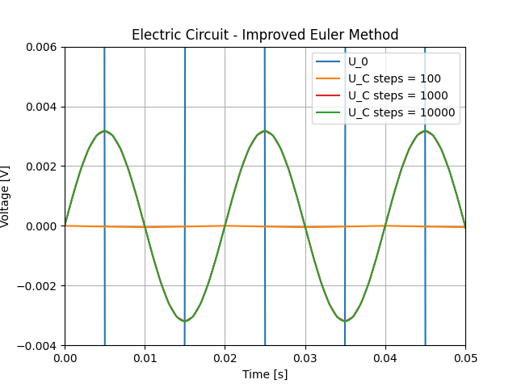
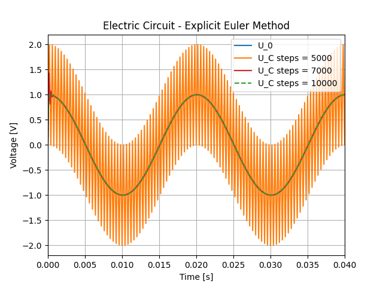
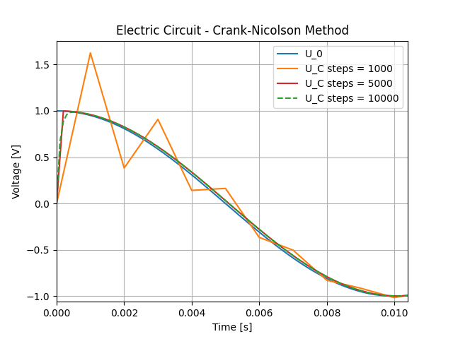
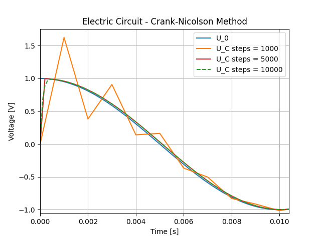

10. Electric Network Model#
10.1. Autonomus system#
System was changed to autonomous form and defined in ElectricNetwork class.
class ElectricNetwork : public NonlinearFunction
{
private:
double resistivity;
double capacity;
public:
ElectricNetwork(double r, double c) : resistivity(r), capacity(c) {}
size_t dimX() const override { return 2; }
size_t dimF() const override { return 2; }
void evaluate (VectorView<double> x, VectorView<double> f) const override
{
f(0) = (cos(100*M_PI*x(1)) - x(0)) / (resistivity*capacity);
f(1) = 1.0;
}
void evaluateDeriv (VectorView<double> x, MatrixView<double> df) const override
{
df = 0.0;
df(0, 0) = -1.0 / (resistivity * capacity);
df(0, 1) = -100*M_PI*sin(100*M_PI*x(1)) / (resistivity*capacity);
df(1, 0) = 0.0;
}
};
10.2. Circuit 1 (R = C = 1)#
10.2.1. Explicit Euler Method#
Overview of obtained results. In this case aplitude of voltage of source is much higher than voltage of capacitor.

As this method calculates the next state based entirely on the current slope, it is prone to increase voltage when step size is large. We can observe that analizing orange line for steps=100. It creates sawtooth like output rather than sinusoidal and is sign of being close to instability. For 1000 and 10000 steps, functions converge to correct solution, as both plots have sinusoidal form.

10.2.2. Implicit Euler Method#
This method calculates the next state based on the future slope, what can couse artificial voltage loss. This happens for 100 steps. Even though the simulation is stable the results are inaccurate.

Comparing results for N = 1000 for Implicit and Explicit methods, we can see that output signal is respectively higher and lower than it really is. One method artificially overshoot signal and one damp it. This results from differences in approaches in this two methods.
10.2.3. Improved Euler Method#
These methods average the slopes, at the start and at the end of interval, to cancel out error. This makes them significantly more accurate for the same number of steps compared to previous methods. For N = 100 plot looks almost flat, this many steps is not enough for capturing any changes in system giving us not very usefull results. On the other hand, this method converge to exact solution much faster than 1st order Euler methods.

10.2.4. Crank-Nicolson Method#
Same as in Improved Euler method. Fail to capture changes with low number of steps giving flat line. But converge to exact solution faster than 1st order Euler methods.

In general we have to simulate system with high freuquancy of input signal. This creates a need for higher number of steps taken for acurrate simulation. Improved Euler and Crank-Nicolson are more efficient for this problem.
10.3. Circuit 2 (R = 100, C = 1e-6)#
In the case of these parameters the challenge is greater. Not only frequency of source signal is high, but also the time constant \(\tau\) is low. Time constant tells us how much time it takes to charge capacitor through resistor to about 64%. It is given by \(\tau\)=RC. In prevoius example \(\tau\)=1, here it is \(100*10^{-6} = 0.0001s\). This means that circiut is sensitive to changes of input voltage, making it prone to oscillations.
10.3.1. Explicit Euler Method#
For orange plot we used 5000 steps and we get highy oscillating results. For comparition, in prevous example we used 5 times less steps and get stable and valid signal. For N = 7000 we observe oscillations at the very begginig but then it converges to final sinusoid. For smaller N values oscillations spiked to +-infinity.

10.3.2. Implicit Euler Method#
This method turned out to be great for systems with low \(\tau\). For small step size simulation remained stable even though resoulution is low. Method converges quickly to expected wave form for 1000 steps.

10.3.3. Improved Euler Method#
Here we get quite interesting results. For small N simulation was not stable, but for N = 5000 we got nice wave signal but shifted in amplitude by -1V. For N = 7000 function converges to expected form.

10.3.4. Crank-Nicolson Method#
For N = 1000 we se oscillations at the beginning but the signal converges nicely.
 
